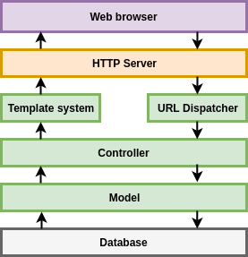
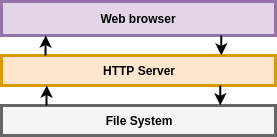
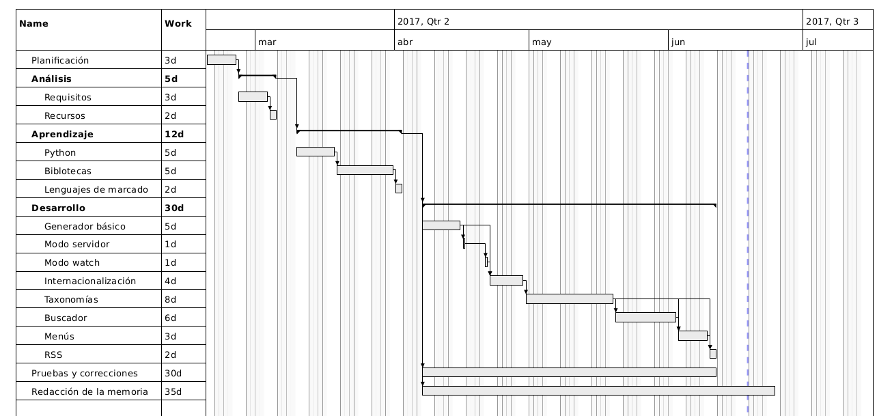
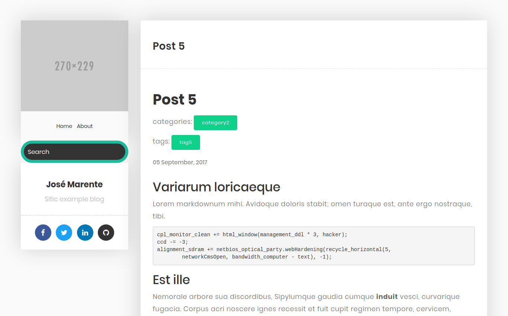

Sitic
Framework para generar páginas webs estáticas
Ingeniería Informática
Índice
- Introducción
- Descripción
- Planificación
- Desarrollo
- Conclusiones
- Demostración
Introducción
Contexto
- Una web se suele visitar con más frecuencia que se edita
- Cualquier web de hoy en día necesita bastantes recursos
- Si una de las partes falla, todo falla
- Seguridad en cada una de las partes
Motivación
- Noviembre 2014, miembro en desarrollo de una web completamente estática
- Se usó uno de los generadores más usados del momento
- Carencia de funcionalidades imprescindibles
- Implementar workarrounds no 100% compatibles
Objetivos
- Crear webs estática con funcionalidades de una web dinámica
- Permitir configurar cada uno de los aspectos
- Cualquier usuario medio puede crear un sitio web sin conocimientos
Objetivos transversales
- Aplicar y ampliar conocimientos en desarrollo web
- Descubrir nuevas tecnologías
- Aportar software libre
Descripción
Qué es Sitic
Framework para hacer sitios web de uso general. Técnicamente hablando es un generador de sitios web estáticos
Generadores dinámicos
- Servidor HTTP ejecuta el generador para crear un nuevo fichero HTML por visita
- La máquina que aloja el servidor con suficiente memoria y CPU para ejecutar el generador todo el día
- Por general, almacenan en caché los ficheros HTML
Diferencia con generadores dinámicos

Generadores estáticos
- LLeva la caché a un paso más. HTML directamente en disco
- Mejora de rendimiento. Servidor HTTP muy buenos enviando ficheros
- Reduccion de costes
- Mejora en seguridad
Diferencia con generadores dinámicos

Características
- Organización sencilla
- Soporte para secciones y taxonomías
- URL personalizables
- Creación dinámica de menús
- Markdown, Textile y Reestructured text
- Internacionalización
- Definir metadatos en los contenidos
Organización de un proyecto Sitic
content
data
static
templates
sitic.yml
Fichero de configuración
- Fichero pricipal del un proyecto Sitic
- Define los aspectos globales
base_url: 'www.siticblog.com'
paginable: 3
taxonomies:
tag: "tags"
category: "categories"
series: "series"
actor: "actors"
disqus_shortname: "siticblog"
search_pagination: 3
La estructura de los contenidos importa
content/
+-- about.md // http://example.com/about
+-- blog // http://example.com/blog/
+-- post1.md // http://example.com/blog/post1
+-- post2.md // http://example.com/blog/post2
+-- post3.textile // http://example.com/blog/post3
+-- post3.rst // http://example.com/blog/post4
Estructura de contenidos
- Definir información extra que desee en los ficheros
- Formato TOML (+++) y YAML(---)
++++++++++++++++
title='Post 1'
tags=['tag1', 'tag2']
actors=['actor1']
++++++++++++++++
## Contenido
Sistema de plantillas
- Usa el potente sistema de plantillas Jinja2
- Reutilización y extensibilidad
{% extends 'base.html' %}
{% block content %}
{{ node.title }}
{{ node.content }}
{% endblock %}
Planificación
Fases
- Fase de análisis: indentificación de las necesidades del software
- Fase de diseño: diseño de todo el sistema
- Fase de aprendizaje: familiarización con Python y bibliotecas
- Fase de desarrollo: implementación de todo lo definido en la fase de diseño
- Pruebas y correcciones: En paralelo a la fase de desarrollo
Fase de desarrollo
- Generador básico
- Sistema de plantillas
- Internacionalización
- Ampliar funcionalidades
Diagrama de Gantt
Desarrollo
Principales tecnologías utilizadas
- Python como lenguaje de programación
- Virtualenv, VirtualenvWrapper y Pip para la gestión de dependencias
- Jinja2 como sistema de plantillas
- Watchdog para monitorización de ficheros
- Click para crear las interfaces de línea de comandos
Buscador
- Facilidad para encontrar contenidos
- No es necesario recorrer la web completa
- Sitic indexa todos los contenidos en un JSON
- Con Javascript (lunr.js) realiza las búsquedas sin llamadas al servidor
Buscador
[
{
"content": "Variarum ...",
"title": "Post 1",
"url": "/blog/post1"
},
{
"content": "markdownum mihi...",
"title": "Post 2",
"url": "/blog/post2"
},
{
"content": "loricaeque Lorem...",
"title": "Post 6",
"url": "/blog/post6"
}
]
Internacionalización
- Uso de biblioteca gettext
- Definir idiomas en fichero configuración
- Traducción de las plantillas
- Herramientas para gestión de traducciones
{% trans %}Texto a traducir{% endtrans %}
Herramientas para el desarrollo
Sitic provee distintas herramientas para facilitar el desarrollo:
- server: lanza un servidor HTTP local
- watcher: genera el contenido cada vez que detecta un cambio
- makemessages: obtiene todas las cadenas a traducir
- compilemessages: complia traducciones
Ejemplo. Blog
Ejemplo. Documentación

Conclusiones
Objetivos cumplidos
- Objetivos marcados al inicio se han cumplidos
- Contribución al mundo del Software libre
- Framework totalmente funcional
Valoración personal
- Siempre es un reto enfrentarse a un proyecto sólo
- Aprendizaje de nuevas herramientas y metodologías
- Puesta en prática de conocimientos adquiridos
Mejoras y ampliaciones
- Publicar un solo idioma
- Método watch que recarga sólo el navegador
- Soporte para temas de plantillas